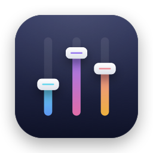

GainBar
Every app, its own volume. A per-app volume mixer and equalizer for your Mac's menu bar.
- A volume slider, mute and balance for every app, with boost up to 200 %
- Solo one app with a click
- Auto-Duck lowers everything else while you're on a call
- Parametric equalizer with presets and headphone correction
- No driver to install: built on Apple's Core Audio process taps (macOS 14.4+)
Available on the Mac App Store.